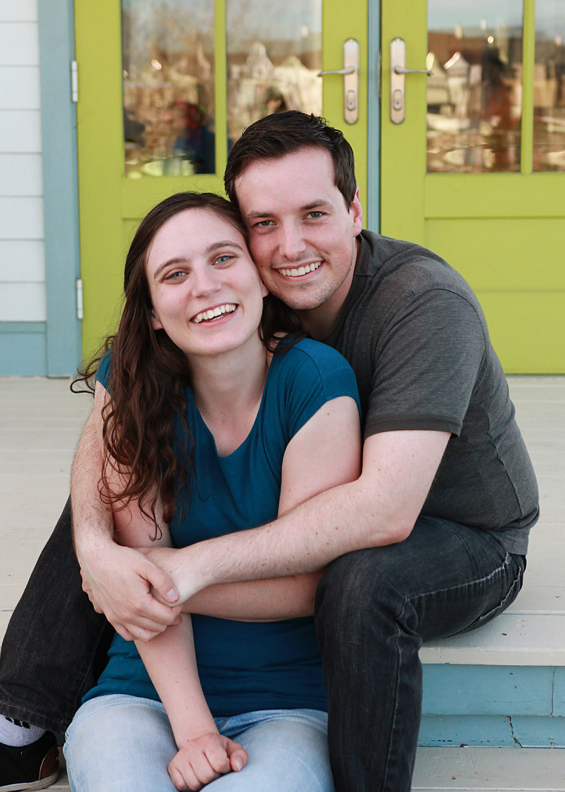

About Me

Brief Summary:
Interests: In addition to space, astronomy, and science education, some of my interests include ballroom dance, movies, trains, Minecraft, and legos.
Future Goals: Following my graduation from Brigham Young University with a bachelor's degree, I plan to attend graduate school.
My goal is to be accepted into a PHD program in education where I will be able to conduct research in science education specifically
centered around a planetarium. Eventually, I hope to have a career in science education in either a formal or informal setting. I also
plan to have children with my wife Sarah.
Education
I am currently pursuing a bachelors of science in applied physics from Brigham Young Univserity
in Provo, Utah with a graduation date set for December 2021. My major features an emphasis in education
meaning that some of my physics coursework will be replaced with education classes.
Research Experience
2020-Present: Research Assistant - Brigham Young University, Provo, Utah
I am currently conducting research at BYU about current practices for teaching introductory astronomy using a
planetarium. As part of this research project, I created a survey that will be sent out to every planetarium in
an educational instituion around the entire United States.
2018-2019: Research Assistant - Orson Pratt Observatory, Provo, Utah
I worked for about a year at the Orson Pratt Observatory on BYU campus aquiring and analyzing data on variable stars.
Variable stars are stars that change in brightness over consistent intervals.
Summer 2017: Observer and Analyst, West Mountain Obs., Santaquin, Utah
I worked for a summer with other students at the West Mountain Observatory operated by BYU. It was a fun
adventure that allowed me to truly experience life as an astronomer (being up all night and alseep during most of
the day). I enjoyed the experience and learned a lot about telescope operation, and how to aquire quality data. See me
next to the big telescope here.
Publications:
An Analysis of the delta Scuti Variable V402 Cephei ( Abstract ) ( Poster )
KELT-21b ( Full Paper )
Ragozzine et al. (in prep)
Contact
Please contact me by email at jbtrump@hotmail.com or by phone at 801-647-8206